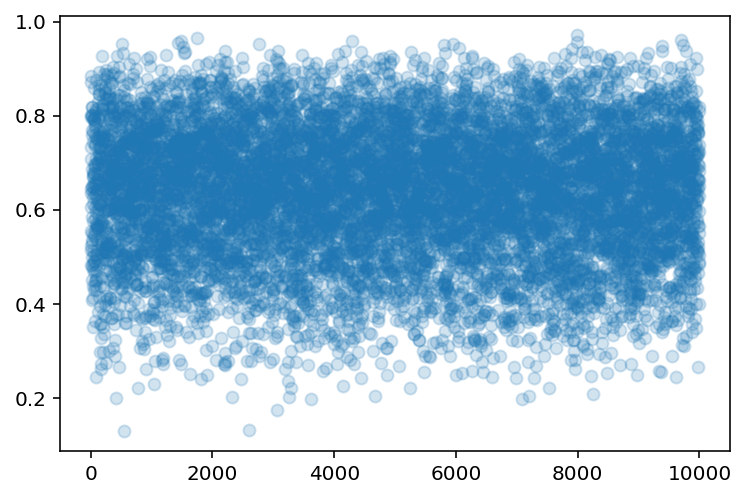
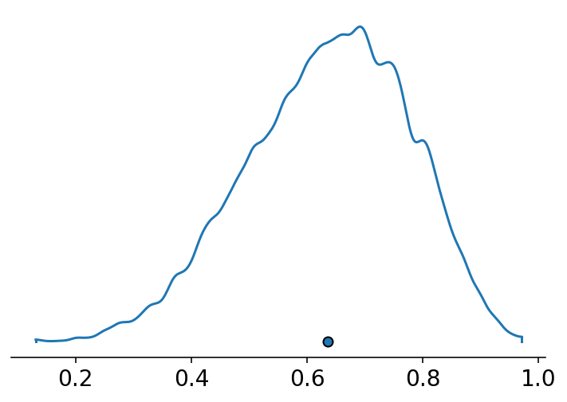
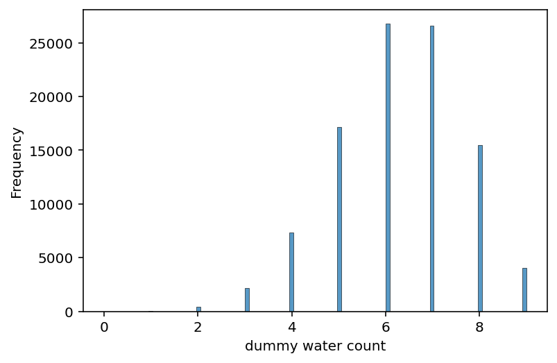

3. Sampling the Imaginary
Contents

3. Sampling the Imaginary¶
# Install packages that are not installed in colab
try:
import google.colab
!pip install watermark
except:
pass
%load_ext watermark
# Core
import numpy as np
import arviz as az
import pandas as pd
import tensorflow as tf
import tensorflow_probability as tfp
import scipy.stats as stats
# visualization
import matplotlib.pyplot as plt
# aliases
tfd = tfp.distributions
2022-01-18 03:38:46.286389: W tensorflow/stream_executor/platform/default/dso_loader.cc:64] Could not load dynamic library 'libcudart.so.11.0'; dlerror: libcudart.so.11.0: cannot open shared object file: No such file or directory
2022-01-18 03:38:46.286432: I tensorflow/stream_executor/cuda/cudart_stub.cc:29] Ignore above cudart dlerror if you do not have a GPU set up on your machine.
%watermark -p numpy,tensorflow,tensorflow_probability,arviz,scipy,pandas
numpy : 1.21.5
tensorflow : 2.7.0
tensorflow_probability: 0.15.0
arviz : 0.11.4
scipy : 1.7.3
pandas : 1.3.5
# config of various plotting libraries
%config InlineBackend.figure_format = 'retina'
We are interested in a blood test that correctly detects vampirisim 95% of time:
\(Pr(Positive|Vampire)\) = 0.95
The test has a false positive rate of:
\(Pr(Positive|Mortal)\) = 0.01
We also know that vampires are rare–about 0.1% of population:
\(Pr(Vampire)\) = 0.001
To compute \(Pr(Vampire|Positive)\) we will apply the Bayes’ rule:
\(Pr(Vampire|Positive) = \frac{Pr(Positive|Vampire) * Pr(Vampire)}{Pr(Positive)}\)
Code 3.1¶
Pr_Positive_Vampire = 0.95
Pr_Positive_Mortal = 0.01
Pr_Vampire = 0.001
tmp = Pr_Positive_Vampire * Pr_Vampire
Pr_Positive = tmp + Pr_Positive_Mortal * (1 - Pr_Vampire)
Pr_Vampire_Positive = tmp / Pr_Positive
Pr_Vampire_Positive
0.08683729433272395
3.1 Sampling from a grid-approximate posterior¶
Code 3.2¶
p_grid = tf.linspace(start=0.0001, stop=0.99999, num=1000)
prob_p = tf.repeat(1., 1000)
prob_data = tf.exp(tfd.Binomial(total_count=9, probs=p_grid).log_prob(6))
joint_prob = prob_data * prob_p
posterior = joint_prob / tf.reduce_sum(joint_prob)
WARNING:tensorflow:@custom_gradient grad_fn has 'variables' in signature, but no ResourceVariables were used on the forward pass.
2022-01-18 03:38:48.716698: W tensorflow/stream_executor/platform/default/dso_loader.cc:64] Could not load dynamic library 'libcuda.so.1'; dlerror: libcuda.so.1: cannot open shared object file: No such file or directory
2022-01-18 03:38:48.716746: W tensorflow/stream_executor/cuda/cuda_driver.cc:269] failed call to cuInit: UNKNOWN ERROR (303)
2022-01-18 03:38:48.716775: I tensorflow/stream_executor/cuda/cuda_diagnostics.cc:156] kernel driver does not appear to be running on this host (fv-az132-324): /proc/driver/nvidia/version does not exist
2022-01-18 03:38:48.717137: I tensorflow/core/platform/cpu_feature_guard.cc:151] This TensorFlow binary is optimized with oneAPI Deep Neural Network Library (oneDNN) to use the following CPU instructions in performance-critical operations: AVX2 AVX512F FMA
To enable them in other operations, rebuild TensorFlow with the appropriate compiler flags.
Code 3.3¶
samples = tfd.Categorical(probs=posterior).sample(10_000)
sample_rows = p_grid.numpy()[samples]
Code 3.4¶
plt.scatter(range(len(sample_rows)), sample_rows, alpha=0.2);

Code 3.5¶
az.plot_density({"": sample_rows}, hdi_prob=1);

3.2 Sampling to summarize¶
3.2.1 Intervals of defined boundaries¶
Code 3.6¶
tf.reduce_sum(posterior[p_grid < 0.5])
<tf.Tensor: shape=(), dtype=float32, numpy=0.17194836>
Code 3.7¶
sum(sample_rows < 0.5) / 10_000
0.1763
Code 3.8¶
sum((sample_rows > 0.5) & (sample_rows < 0.75)) / 10_000
0.6033
3.2.2 Intervals of defined mass¶
Code 3.9¶
np.percentile(sample_rows, 80)
0.7597761750221252
Code 3.10¶
np.percentile(sample_rows, [10, 90])
array([0.44649732, 0.81192257])
Code 3.11¶
p_grid = tf.linspace(start=0.0001, stop=0.99999, num=1000)
prior = tf.repeat(1., 1000)
likelihood = tf.exp(tfd.Binomial(total_count=3, probs=p_grid).log_prob(3))
joint_prob = likelihood * prior
posterior = joint_prob / tf.reduce_sum(joint_prob)
samples = tfd.Categorical(probs=posterior).sample(10_000)
sample_rows = p_grid.numpy()[samples]
Code 3.12¶
np.percentile(sample_rows, q=(25, 75))
array([0.70672894, 0.92992765])
Code 3.13¶
az.hdi(sample_rows, hdi_prob=0.5)
array([0.8408483, 0.99999 ], dtype=float32)
3.2.3 Point Estimates¶
Code 3.14¶
p_grid[posterior == max(posterior)]
<tf.Tensor: shape=(1,), dtype=float32, numpy=array([0.99999], dtype=float32)>
Code 3.15¶
stats.mode(sample_rows)[0]
array([0.98597753], dtype=float32)
Code 3.16¶
np.mean(sample_rows), np.median(sample_rows)
(0.799064, 0.8408483)
Code 3.17¶
sum(posterior * abs(0.5 - p_grid))
<tf.Tensor: shape=(), dtype=float32, numpy=0.31286764>
Code 3.18¶
loss = list(map(lambda d: tf.reduce_sum(posterior * np.abs(d - p_grid)), p_grid))
Code 3.19¶
p_grid[tf.math.argmin(loss)]
<tf.Tensor: shape=(), dtype=float32, numpy=0.8408483>
3.3 Sampling to simulate prediction¶
3.3.1 Dummy data¶
Code 3.20¶
tf.exp(tfd.Binomial(total_count=2, probs=0.7).log_prob(np.arange(3)))
WARNING:tensorflow:@custom_gradient grad_fn has 'variables' in signature, but no ResourceVariables were used on the forward pass.
<tf.Tensor: shape=(3,), dtype=float32, numpy=array([0.09 , 0.42000002, 0.48999998], dtype=float32)>
Code 3.21¶
tfd.Binomial(total_count=2, probs=0.7).sample()
<tf.Tensor: shape=(), dtype=float32, numpy=1.0>
Code 3.22¶
tfd.Binomial(total_count=2, probs=0.7).sample((10,))
<tf.Tensor: shape=(10,), dtype=float32, numpy=array([2., 1., 2., 0., 2., 2., 0., 1., 2., 2.], dtype=float32)>
Code 3.23¶
dummy_w = tfd.Binomial(total_count=2, probs=0.7).sample((100000,))
np.unique(dummy_w.numpy(), return_counts=True)[1] / 1e5
array([0.09035, 0.42194, 0.48771])
Code 3.24¶
dummy_w = tfd.Binomial(total_count=9, probs=0.7).sample((100000,))
ax = az.plot_dist(dummy_w.numpy(), kind='hist', hist_kwargs={"rwidth": 0.1})
ax.set_xlabel("dummy water count", fontsize=14);
